공통 계산 조건
구조 및 열 조건을 한 변수씩 변경한 전류 특성입니다. 별도 표기한 비교 변수를 제외하면 아래 기본 조건을 적용합니다.
{kind=link}
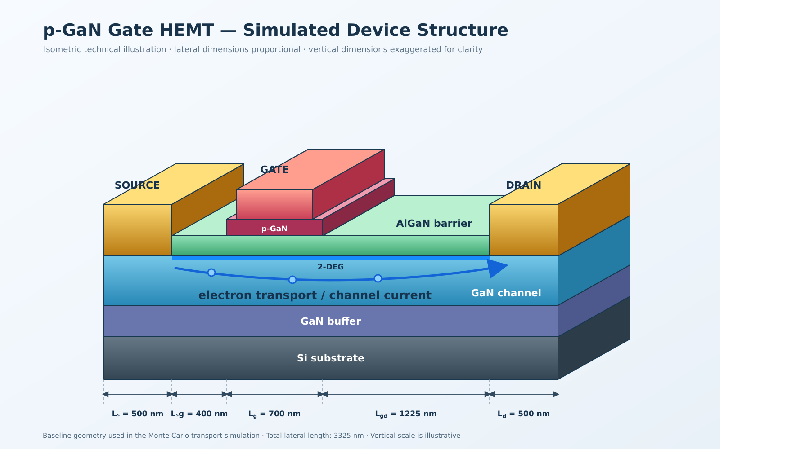
| 항목 | 조건 |
|---|---|
| 계산 날짜 | 2026-09-15 |
| 기준 구조 | Ls 500 / Lsg 400 / Lg 700 / Lgd 1225 / Ld 500 nm |
| 기본 Tsub | 300 K |
| 기본 Rth | 20 K·mm/W |
| Self-heating | ON — 준정적 열 모델 |
| 슈퍼입자 수 | 100,000 |
| 시간 간격 | 1 fs (1 × 10⁻¹⁵ s) |
| 전압 조건별 steps | 20,000 |
| 전류 평균 | 각 전압 조건의 마지막 10,000 steps |
열 모델: Tdevice = Tsub + Rth VDS IDS (IDS: A/mm). 그래프의 전류 단위는 mA/mm입니다.
준정적 온도 갱신과 입자 수송 시간은 구분합니다. 현재 그림에는 통계적 오차막대를 표시하지 않았으며, 문턱전압·DIBL의 정량 추출은 포함하지 않습니다.
1. 기본 구조
Ls = 500 nm, Lsg = 400 nm, Lg = 700 nm, Lgd = 1225 nm, Ld = 500 nm.
{kind=link}
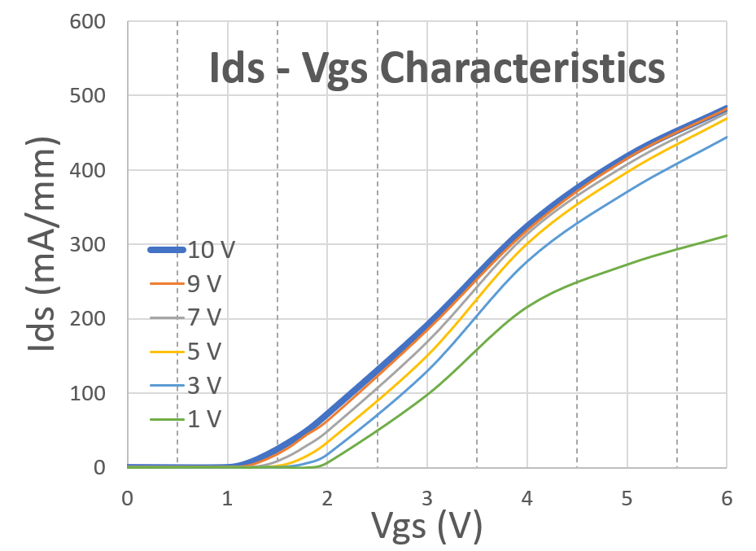
{kind=link}
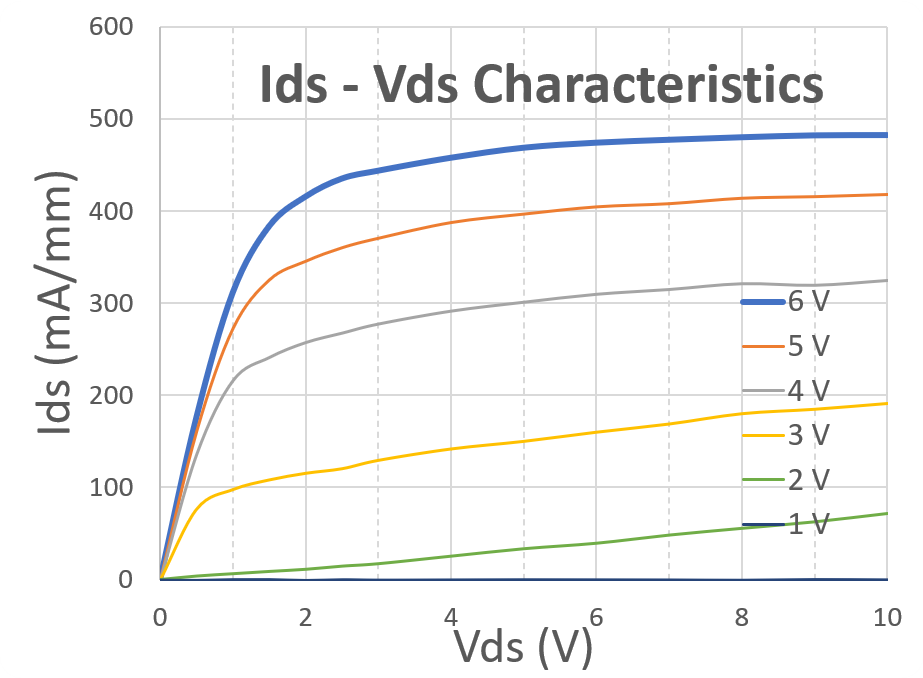
Self-heating에 따른 소자 온도
{kind=link}
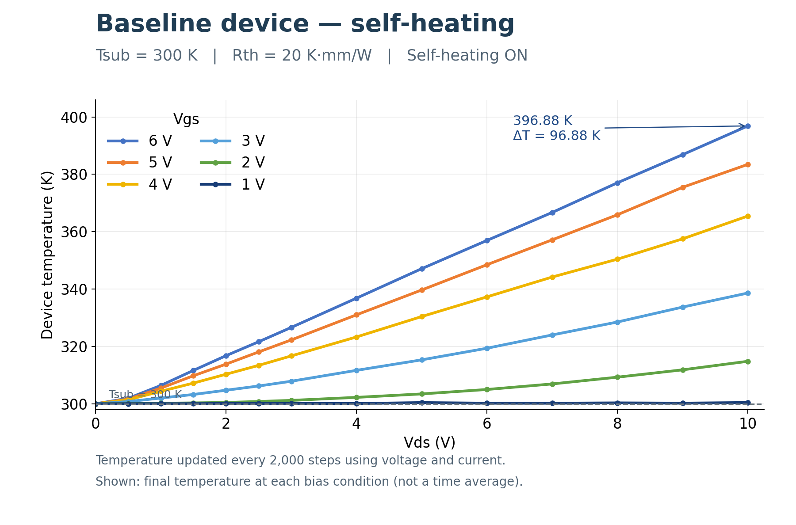
Vgs = 6 V, Vds = 10 V에서 최종 소자 온도는 396.88 K이며, 기판 온도 대비 상승량은 96.88 K입니다. 이 값은 시간 평균 온도가 아니라 온도 갱신의 최종값입니다.
관찰 및 해석 범위. 이후 비교의 기준 구조입니다. Vgs 증가에 따라 전류가 증가하고, 높은 Vgs의 출력 특성에서는 Vds 증가에 따른 전류 증가폭이 줄어듭니다.
Turn-on 부근 저전류의 장시간 평균 검토
Vgs = 1 V, Vds = 10 V에서 full 영역 전류(I_hist)의 평균 특성을 검토했습니다. 초기 60,000 step을 제외하고, 난수 seed를 변경하지 않은 연속 계산의 14개 기록을 순서대로 연결했습니다. 각 기록은 20,000 step이며, 분석 구간은 총 280,000 step(시간 간격 1 fs 기준 280 ps)입니다. 각 파일의 앞부분을 다시 제외하지 않고 전체 기록을 사용했습니다.
{kind=link}
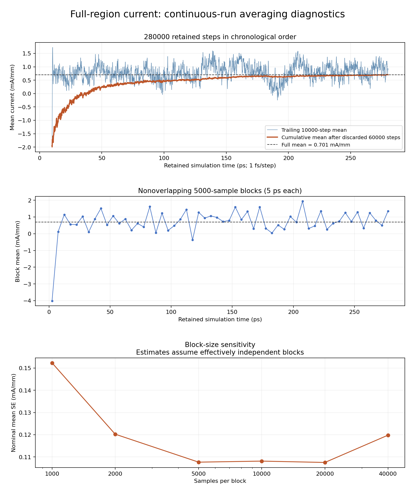
결과. 순간 전류의 표본 표준편차는 12.13 mA/mm이지만, 전체 시간 평균은 0.701 mA/mm입니다. 순간 변동 폭과 평균값의 통계적 오차는 구분합니다. 블록당 5,000 sample을 사용하면 56개 블록이 되며, 블록 평균 사이의 상관이 충분히 작다는 가정에서 전체 평균의 표준오차 추정값은 약 0.108 mA/mm입니다. 블록 길이를 10,000 또는 20,000 sample로 바꿔도 추정값은 약 0.108 mA/mm로 비슷합니다.
해석. 충분히 안정된 상태에서는 긴 시간 평균으로 평균 전류의 통계적 오차를 줄일 수 있습니다. 이동평균은 시간에 따른 평균의 변화를 보여주며, 통계적 오차 검토에는 겹치지 않는 블록 평균을 사용했습니다. 서로 다른 난수를 사용하더라도 입자·전위 상태가 이어지므로 연속 구간의 독립성을 자동으로 가정하지 않습니다. 블록 길이에 따른 추정값의 안정성은 유용한 점검이지만 독립성이나 수렴의 완전한 증명은 아닙니다.
남은 점검. 첫 5,000 sample의 평균은 약 −4 mA/mm이고, 첫 10,000 sample의 평균은 약 −1.94 mA/mm입니다. 음의 평균 전류가 나타난 원인은 전류 기록만으로 확인되지 않았으며, 해당 구간을 임의로 제외하지 않았습니다. 모델·격자·입자 수에 따른 오차는 이 통계 추정에 포함하지 않습니다. 이번 자료는 한 전압 조건의 저전류 평균을 검토한 결과로, 촘촘한 Ids–Vgs 곡선이나 문턱전압의 정량 추출을 대신하지 않습니다.
전류의 시간 변화와 평균 구간
기본 구조, Vgs = 6 V, Vds = 10 V에서 full 영역 전류(I_hist)의 20,000 step 기록입니다. 이 보충 자료의 파일 내부 계산 날짜는 2026-08-03입니다.
{kind=link}
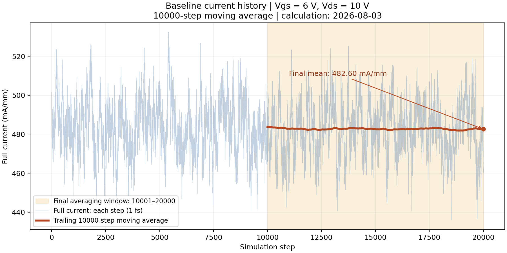
이동평균은 10,000번째 step부터 표시합니다. 마지막 값은 10,001–20,000 step의 산술평균인 482.60 mA/mm입니다. 해당 구간의 순간 전류 표본 표준편차는 13.76 mA/mm이며, 평균값의 표준오차와는 구분합니다. 겹치는 이동평균 값은 독립 표본이 아니므로 곡선의 매끄러움만으로 평균의 오차를 판단하지 않습니다.
평균 구간의 앞·뒤 5,000 step 평균은 482.10, 483.10 mA/mm로 약 0.21% 차이입니다. 이 기록은 이미 약 396 K인 상태에서 시작하며, 초기 상태부터의 전체 수렴 과정을 보여주지는 않습니다.
채널 방향 전위·전기장·전자 밀도
기본 구조에서 Vgs = 6 V, Vds = 1, 3, 10 V의 최종 저장 상태를 비교했습니다. 채널 상단 z = 116 nm 바로 아래의 동일 셀(중심 z ≈ 116.42 nm, 셀 범위 116–116.83 nm)에서 추출했습니다.
{kind=link}
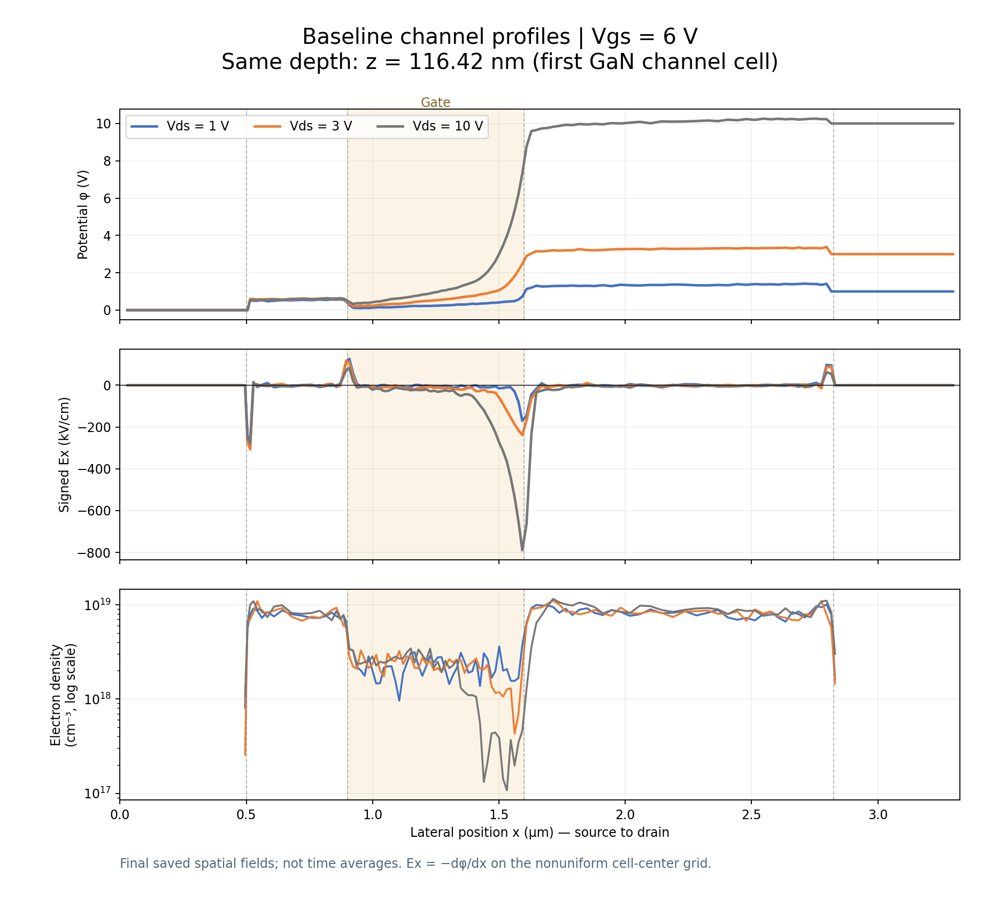
관찰. Vds가 증가할수록 gate의 drain 쪽 끝 부근에서 전위 변화와 수평 전기장의 집중이 커집니다. Vds = 10 V에서는 같은 깊이의 gate drain 쪽 전자 밀도가 감소하며, 출력 특성의 포화와 pinch-off 해석을 검토할 자료가 됩니다.
해석 범위. 이 그림은 시간 평균이 아닌 최종 상태의 단면이며, 입자 통계에 따른 공간 요동이 남아 있습니다. 전자 밀도는 국소 체적 밀도(cm⁻³)로, 2DEG 면밀도와 구분합니다. 단일 깊이의 밀도 감소만으로 pinch-off를 확정하지 않습니다. Self-heating이 적용되어 최종 갱신 온도는 Vds = 1, 3, 10 V에서 각각 306.37, 326.61, 396.88 K이며, 전압과 온도의 변화가 함께 포함됩니다. 접촉 및 gate 경계의 전기장 값은 격자와 미분 방법의 영향도 고려해야 합니다.
2. Gate length (Lg)
Lg = 300, 500, 700 nm. 나머지 구조 치수는 기본값입니다.
{kind=link}
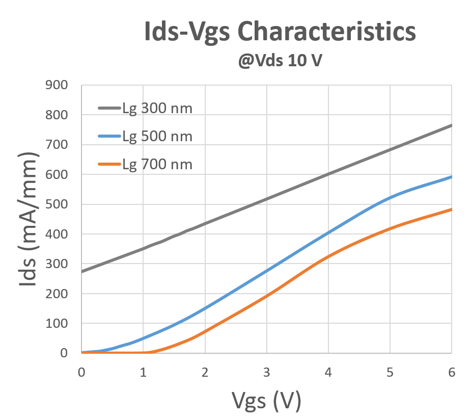
{kind=link}
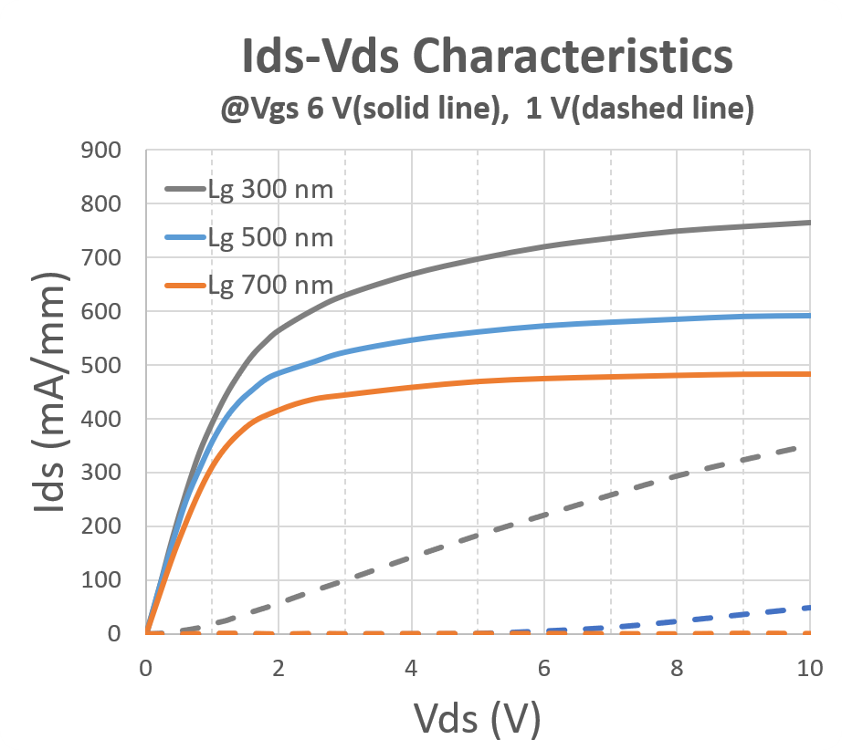
관찰 및 해석 범위. Lg가 짧아질수록 ON-state 전류가 증가합니다. 300 nm에서는 낮은 gate 전압에서도 상당한 전류가 남습니다. 이는 short-channel effect에 따른 gate 제어 약화 가능성을 시사하지만, DIBL이나 문턱전압 이동량을 확정하는 결과는 아닙니다.
Monte Carlo 입자 분포와 채널 전위
Vgs = 1 V, Vds = 10 V에서 Lg = 300, 500, 700 nm의 최종 저장 상태를 같은 공간 축으로 비교했습니다.
{kind=link}
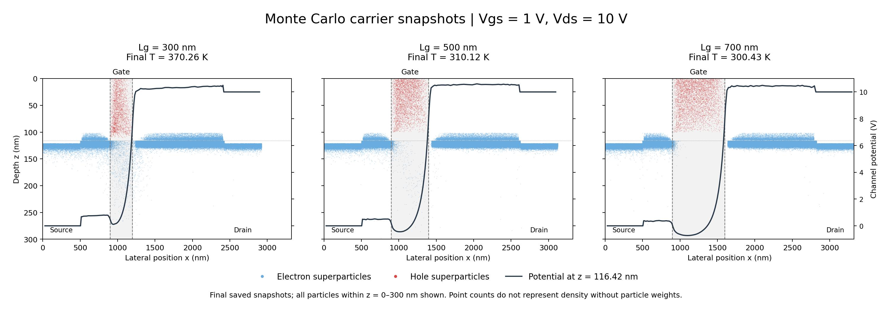
관찰. Lg가 길어질수록 gate 아래에서 전자 입자가 드문 구간이 길어집니다. 짧은 gate에서는 드레인 쪽 높은 전위로 상승하는 위치가 source에 더 가까워집니다. 전류 그래프의 낮은 gate 전압에서 나타나는 차이를 내부 분포와 함께 살펴볼 자료입니다.
해석 범위. 시간 평균이 아닌 최종 순간의 분포입니다. 점의 겹침과 슈퍼입자 가중치 때문에 점의 개수나 진하기를 정량적 밀도로 해석하지 않으며, 입자가 드문 모습만으로 완전한 공핍을 확정하지 않습니다. Self-heating이 적용되어 최종 갱신 온도는 Lg = 300, 500, 700 nm에서 각각 370.26, 310.12, 300.43 K입니다. 파일 내부 계산 날짜는 각각 2026-08-07, 2026-09-16, 2026-08-04입니다. 한 Vds 조건의 비교이므로 DIBL의 정량 추출을 대신하지 않습니다.
채널 전위·전기장과 전자 밀도
Vgs = 1 V, Vds = 10 V에서 세 Lg의 최종 저장 상태를 비교합니다. 모든 그림의 x는 소스 쪽 소자 경계로부터의 실제 거리이며, gate는 x = 900 nm에서 시작합니다.
{kind=link}
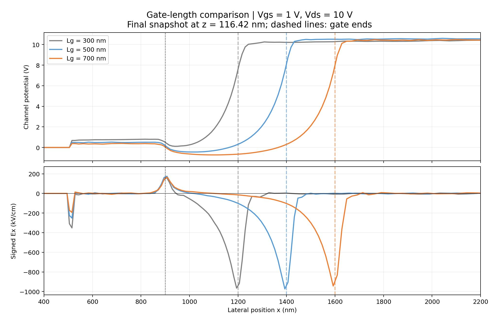
전위가 급격히 상승하고 전기장이 집중되는 위치가 gate의 drain 쪽 끝과 함께 이동합니다. Lg가 짧아질수록 gate 아래 낮은 전위 구간이 짧아집니다. 경계 부근의 전기장 크기는 격자와 미분 방법의 영향도 받습니다.
{kind=link}
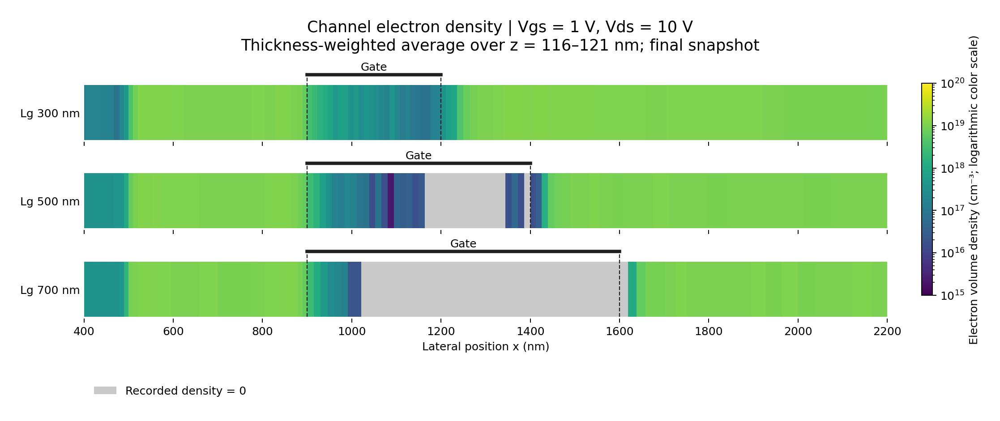
공간 평균 후에도 Lg = 500, 700 nm에는 밀도가 0으로 기록된 구간이 남습니다. 이 구간을 임의의 양수로 대체하거나 연결하지 않고 회색으로 표시했습니다. 최종 순간의 유한 입자 통계에 따른 결과이므로 회색 영역을 실제 완전 공핍 영역으로 확정하지 않습니다.
같은 전압 조건의 전류와 온도
| Lg (nm) | 평균 I_hist (mA/mm) | 최종 갱신 온도 (K) |
|---|---|---|
| 300 | 351.05 | 370.26 |
| 500 | 49.24 | 310.12 |
| 700 | 0.187 | 300.43 |
각 파일의 20,000 step 중 마지막 10,000 step의 full 영역 전류 평균입니다. 700 nm의 0.187 mA/mm는 이번 짧은 기록의 평균이며, 기본 구조의 장시간 연속 기록에서 얻은 약 0.701 mA/mm와 구분합니다. Self-heating에 따른 온도 차이가 포함되므로 등온 비교가 아닙니다.
종합 해석. 전류와 내부 분포의 차이는 짧은 gate에서 gate 제어가 약해질 가능성을 검토할 근거입니다. 그러나 이번 한 Vds 조건의 자료만으로 DIBL, 문턱전압 이동량 또는 punch-through를 확정하지 않습니다.
3. Source-to-gate distance (Lsg)
Lsg = 400, 600, 800 nm. 나머지 구조 치수는 기본값입니다.
{kind=link}
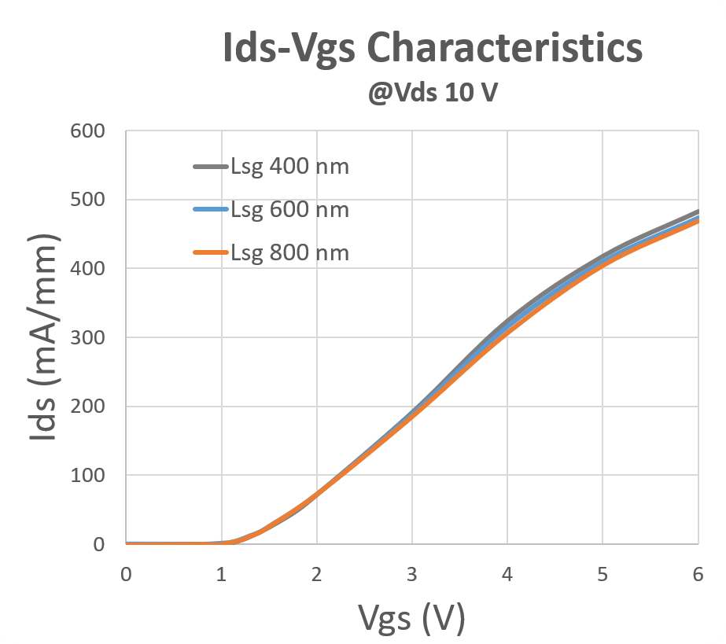
{kind=link}
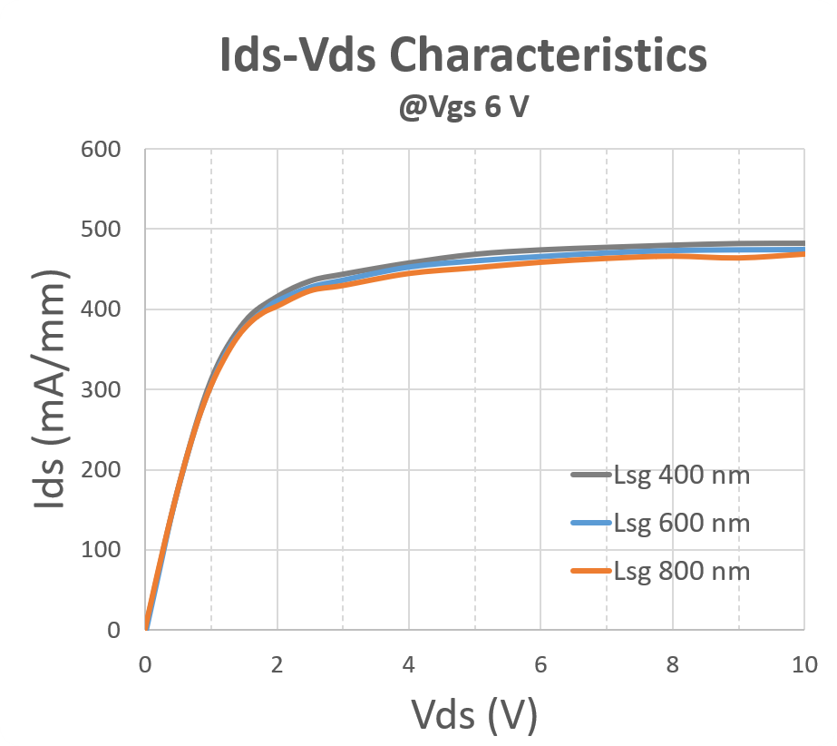
관찰 및 해석 범위. Lsg가 길어질수록 높은 gate 전압에서 전류가 조금 감소하며, turn-on 구간은 거의 겹칩니다. 대표 전압에서의 추가 계산과 내부 분포 비교를 아래에 정리했습니다.
대표 전압에서의 전류 비교
Vgs = 6 V, Vds = 10 V에서 full 영역 전류 I_hist의 마지막 10,000 step 평균을 비교했습니다. Lsg = 800 nm는 20,000 step 추가 계산 후 그 기록의 마지막 10,000 step을 사용했습니다. Tsub = 300 K, Rth = 20 K·mm/W, self-heating ON입니다.
| Lsg (nm) | 평균 전류 (mA/mm) | step별 전류 표준편차 (mA/mm) | 최종 모델 온도 (K) |
|---|---|---|---|
| 400 | 482.60 | 13.76 | 396.88 |
| 600 | 473.09 | 13.69 | 394.05 |
| 800 | 465.21 | 13.66 | 393.17 |
400 nm 대비 평균 전류 감소는 600 nm에서 약 2.0%, 800 nm에서 약 3.6%입니다. 800 nm의 기존 평균 471.64 mA/mm는 추가 계산으로 465.21 mA/mm로 갱신했습니다. 이 보충 계산은 Vgs = 6 V, Vds = 10 V 조건에 해당합니다. 표준편차는 순간 전류의 요동 크기이며 평균값의 표준오차를 뜻하지 않습니다.
최종 carrier 분포
{kind=link}
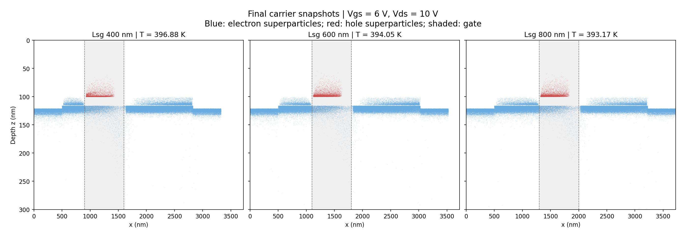
전류 안정성 및 채널 전위·전기장
{kind=link}
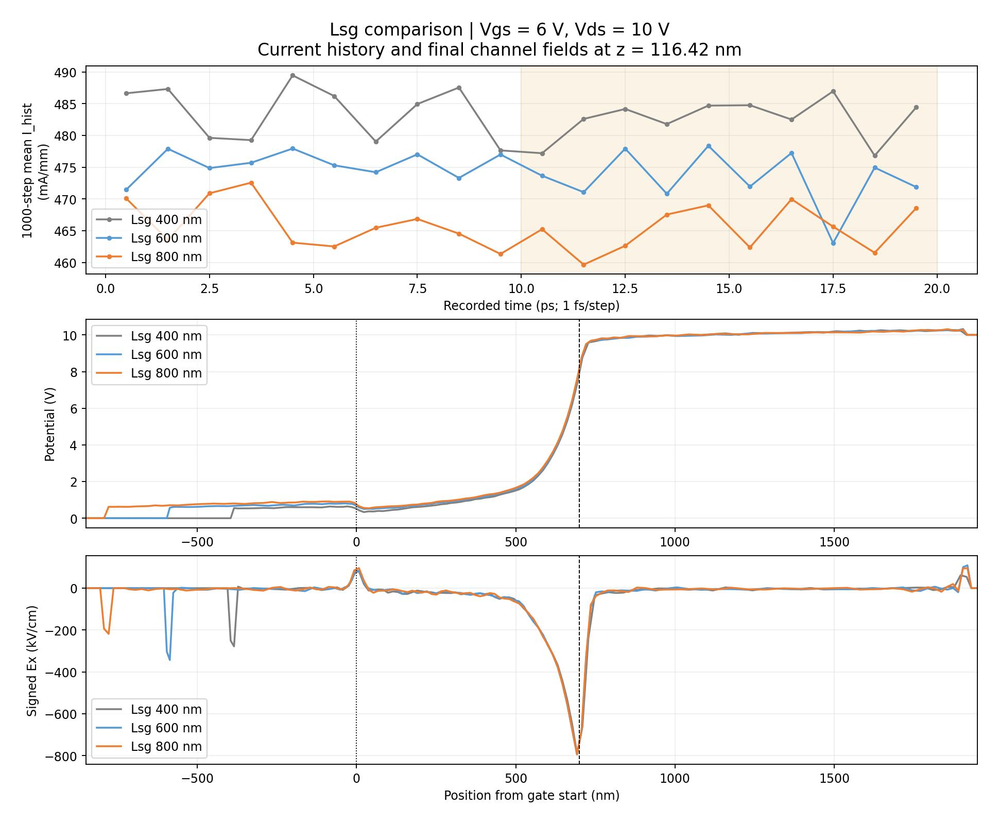
800 nm의 최종 10,000 step을 앞뒤 5,000 step으로 나누면 평균은 각각 464.81, 465.61 mA/mm로, 차이는 약 0.80 mA/mm입니다. 추가 기록 후반에는 기존 기록에서 보였던 지속적인 전류 감소가 크게 줄었습니다. 다만 이 비교만으로 엄밀한 수렴이나 평균 차이의 통계적 유의성이 입증되는 것은 아닙니다.
전위와 Ex는 첫 GaN 셀 중심 깊이 z ≈ 116.42 nm에서 추출했으며, Ex는 비균일 격자의 셀 중심 전위로부터 −∂φ/∂x로 계산했습니다. Gate와 gate–drain 영역의 분포는 대체로 겹칩니다. Source–gate 구간의 정전위 차이는 약 0.507, 0.672, 0.753 V로 증가하지만, 이는 준페르미 전위차를 이용한 저항 추출이 아니므로 정확한 저항 증가량으로 해석하지 않습니다.
4. Gate-to-drain distance (Lgd)
Lgd = 1225, 3000 nm. 나머지 구조 치수는 기본값입니다.
{kind=link}
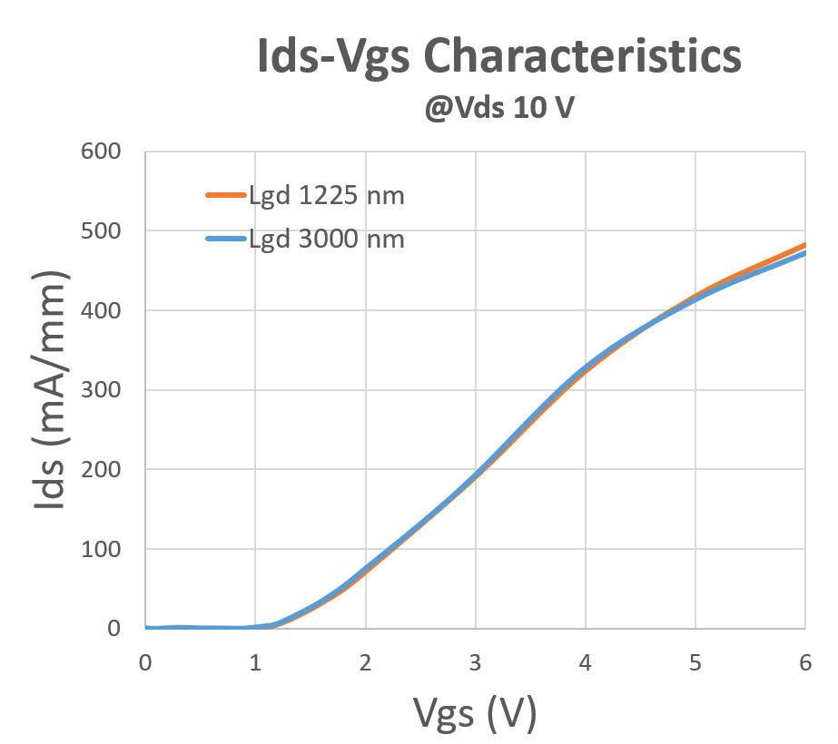
{kind=link}
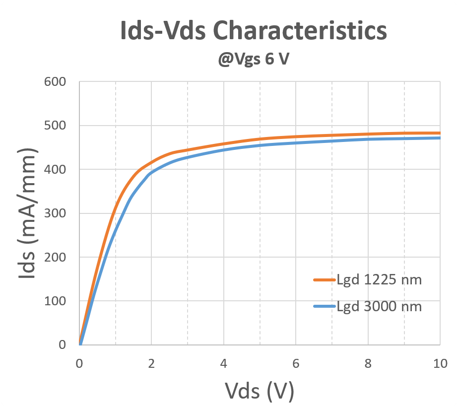
관찰 및 해석 범위. 출력 특성에서 3000 nm의 전류가 더 낮고, 낮은 Vds에서 차이가 두드러집니다. 전달 특성은 대부분 겹치며 중간 Vgs에서 작은 교차가 있습니다. 대표 전압에서 추가 계산한 전류와 최종 전위·전기장 비교를 아래에 보충했습니다.
추가 계산과 전류 안정성
Vgs = 6 V, Vds = 10 V에서 full 영역 전류 I_hist의 마지막 10,000 step을 비교했습니다. Lgd = 3000 nm는 기존 상태에서 20,000 step을 추가 계산한 최신 기록을 사용합니다. Tsub = 300 K, Rth = 20 K·mm/W, self-heating ON입니다.
| Lgd (nm) | 평균 전류 (mA/mm) | step별 표준편차 (mA/mm) | 최종 모델 온도 (K) |
|---|---|---|---|
| 1225 | 482.60 | 13.76 | 396.88 |
| 3000 | 472.26 | 13.09 | 393.99 |
3000 nm의 기존 마지막 10,000 step 평균은 471.92 mA/mm, 추가 기록의 앞·뒤 10,000 step 평균은 각각 470.26, 472.26 mA/mm입니다. 기존 대표값과 최신 대표값의 차이는 약 0.07%이며, 기본 구조 대비 약 2.14%의 전류 감소 경향이 유지되었습니다. 추가 기록의 온도는 약 393.56–394.75 K 범위입니다. 이는 평균의 안정성을 뒷받침하지만 엄밀한 통계적 수렴 증명은 아닙니다. 표준편차는 순간 전류의 요동이며 평균의 표준오차가 아닙니다.
위 전달·출력 곡선은 기존 sweep 자료입니다. 이번 추가 계산으로 확인한 Vgs = 6 V, Vds = 10 V의 최신 대표값은 이 표에 별도로 제시합니다.
{kind=link}
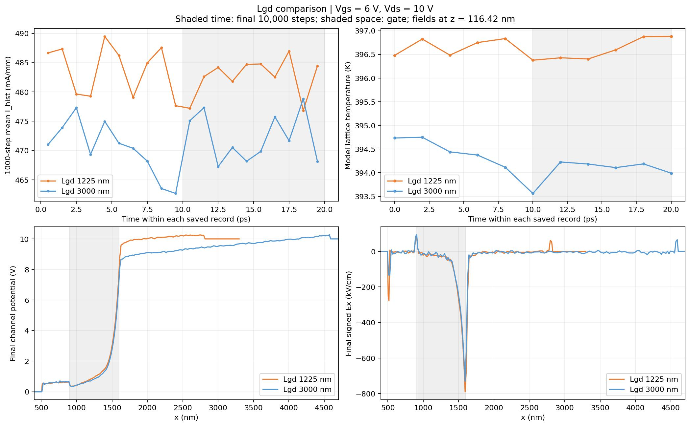
전위 분포와 해석 범위
| 채널 단면의 비교 항목 | Lgd 1225 nm | Lgd 3000 nm |
|---|---|---|
| Gate 시작 → 끝의 정전위 차이 (V) | 7.46 | 6.87 |
| Gate 끝 → drain 시작의 정전위 차이 (V) | 2.04 | 2.61 |
| Gate 아래 최대 |Ex| (kV/cm) | 약 790 | 약 730 |
Lgd가 길어지면서 gate–drain 구간에 걸리는 정전위 차이는 증가하고 gate 아래의 정전위 차이는 감소했습니다. 최신 snapshot에서도 이러한 전압 재분배와 gate의 drain 측 끝에서 전기장 집중이 완화되는 경향이 보입니다. 전류 감소와 함께 관찰되는 변화이며, 특정 원인의 기여도를 분리한 결과는 아닙니다.
전위 차이는 셀 중심 값을 구조 경계에 선형 보간하여 계산했고, Ex는 비균일 격자의 전위에서 −∂φ/∂x로 계산했습니다. 공간 분포는 시간 평균이 아닌 마지막 snapshot입니다. 정전위 차이를 전류로 나눈 값을 정확한 접근 저항으로 해석하지 않으며, 10 V ON 상태의 전기장 감소만으로 항복전압 향상을 주장하지 않습니다.
3000 nm는 전류와 최종 온도가 모두 낮으므로, 더 높은 온도 때문에 전류가 감소했다는 설명은 이 비교와 맞지 않습니다. 구조 효과와 self-heating 효과의 분리에는 등온 비교가 필요합니다. 두 구조 모두 drain 접촉 직전 전위가 10 V를 약간 넘는 작은 굴곡이 있어, 해당 부분은 공간전하·접촉 경계·격자의 영향을 확인하기 전까지 주요 물리 현상으로 해석하지 않습니다.
5. Substrate temperature
Tsub = 300, 350, 400 K. 기본 구조, Rth = 20 K·mm/W, self-heating ON.
{kind=link}
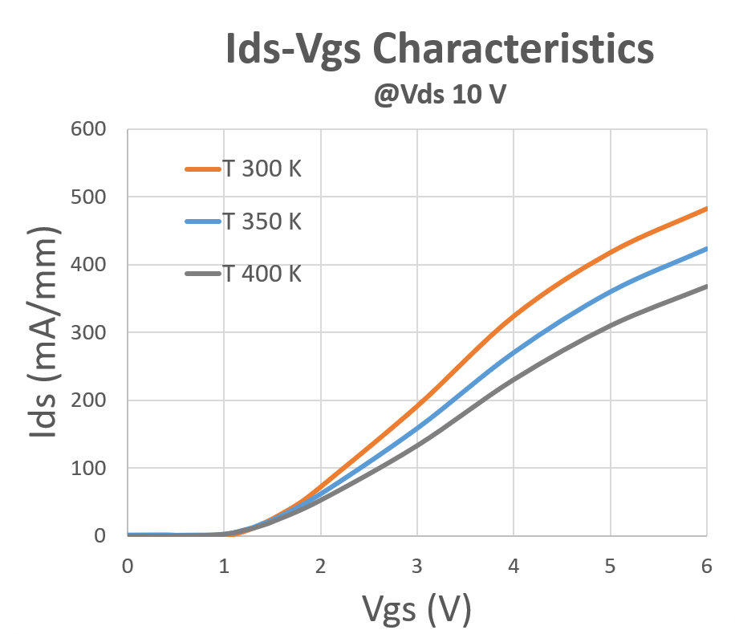
{kind=link}
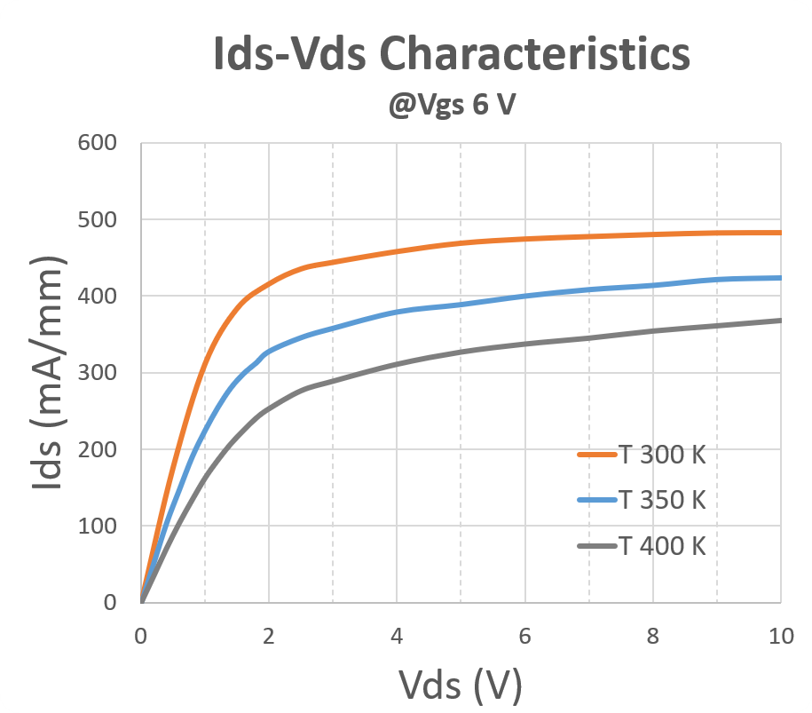
관찰 및 해석 범위. Tsub가 증가할수록 전달·출력 특성의 전류가 감소합니다. 그림의 T는 substrate temperature를 뜻합니다. Self-heating이 적용되어 실제 모델의 소자 온도는 Tsub와 다르며, 이 결과는 고정 소자 온도에서의 등온 비교가 아닙니다.
6. Thermal resistance
Rth = 20, 30, 40 K·mm/W. 기본 구조, Tsub = 300 K, self-heating ON.
{kind=link}
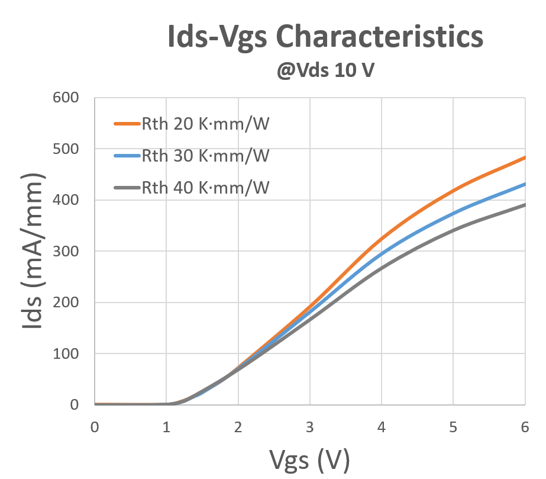
{kind=link}
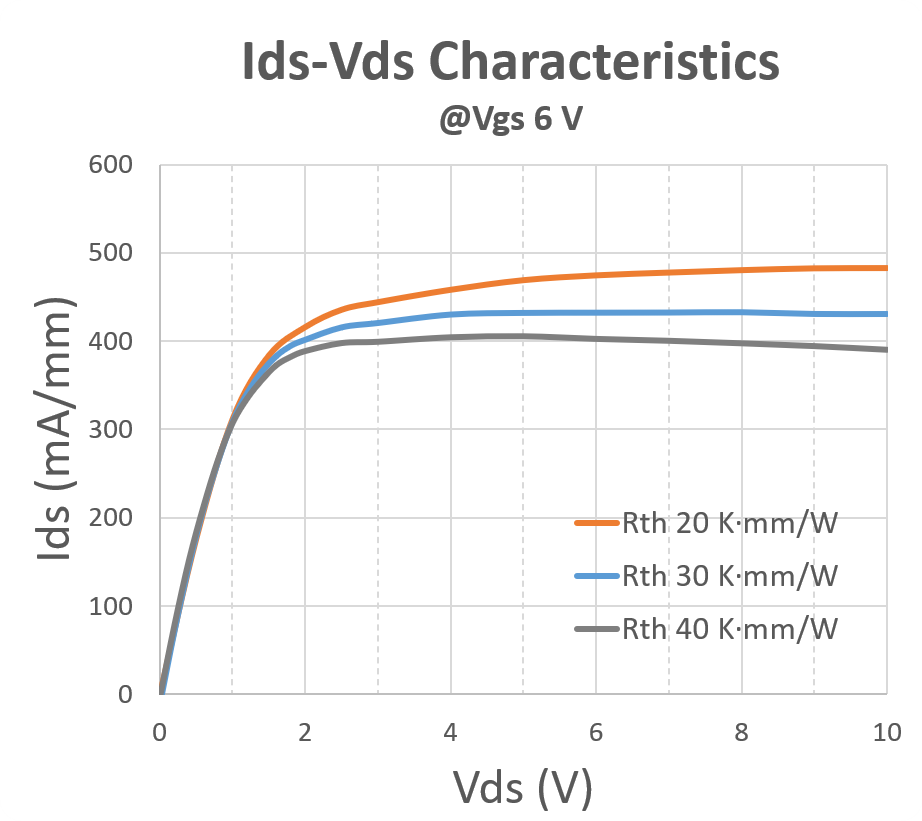
관찰 및 해석 범위. 낮은 Vds에서 곡선이 거의 겹치지만 높은 Vds에서는 Rth가 클수록 전류가 낮아집니다. Rth = 40 K·mm/W에서는 약 4–5 V 이후 완만한 전류 감소가 보입니다. 온도·전력 기록으로 해석을 보충할 예정입니다.
추후 보충 자료
전류 그래프를 먼저 공개하고, 전위·전기장·carrier 분포와 온도 기록을 각 항목에 순차적으로 추가합니다. 현재 결과는 개발 중인 시뮬레이터의 비교 결과이며, 실험 소자의 정량적 검증을 대신하지 않습니다.